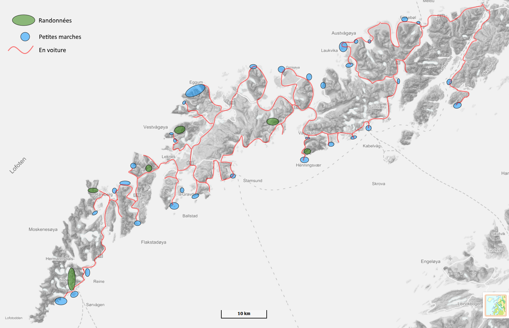

La carte juste en dessous donne un aperçu de toute notre semaine: les randos, les villages qu'on a exploré, l'itinéraire de notre roadtrip... Il y a encore plus de détails dans les pages décrivant chaque journée !
cliquer sur la carte pour l'afficher en grand
| Date | Île | Sommet | Carctéristiques |
|---|---|---|---|
| 14/03/2018 | Moskenesøya | Munken | Raquettes utiles -- 5h |
| 15/06/2018 | Moskenesøya | Ryten | Sans raquettes -- facile |
| 16/06/2018 | Flakstadøya | Stornappstinden | Raquettes nécessaires -- 4h |
| 17/03/2018 | Vestvågøya | Vikjortinden | Raquettes utiles -- on n'est pas arrivés au sommet |
| 20/03/2018 | Austvågøya | Henningsvær | Sans raquettes -- itinéraire difficile à trouver en hiver |
| 21/03/2018 | Vestvågøya | Himmeltinden | Sans raquettes -- on n'est pas arrivés au sommet |